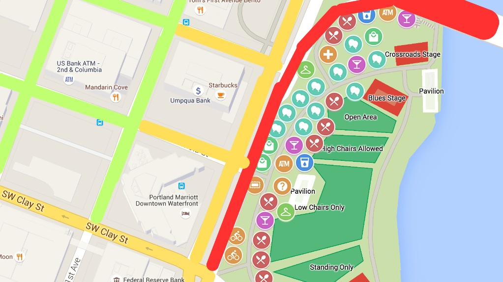

Demonstração da Rota

Sua navegação inteligente contra alagamentos.

A IA coleta dados de previsão do tempo, mapas topográficos e informações históricas para identificar áreas de risco.
Nossa tecnologia analisa os dados em tempo real, identificando os pontos de alagamento com alta precisão.
O sistema calcula a rota mais segura para o seu destino, desviando de áreas de risco e te mantendo sempre protegido.